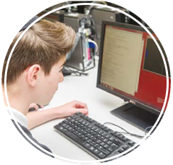
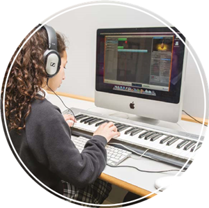

Resources
Here is a small selection of resources for computing at KS3 and KS4. A much more complete curated list can be found here.
Background
Computing at School Working Group, Computer Science: A Curriculum for Schools (Computing at School, 2012), .
Helsper, E.J. and Eynon, R., ‘Digital Natives: Where is the Evidence?’ British Educational Research, (2010) 36(3), 503?520.
Papert, S., Mindstorms: Children, Computers, and Powerful Ideas (Basic Books, 1993).
The Royal Society, Shut Down or Restart? The Way Forward for Computing in UK Schools (London, 2012).
Rushkoff, D., Program or be Programmed: Ten Commands for a Digital Age (OR Books, 2009).
Teaching Agency, Subject Knowledge Requirements for Entry into Computer Science Teacher Training (London, 2012)
Subject knowledge
Bentley, P.J., Digitized: The Science of Computers and How it Shapes our World (Oxford University Press, 2012).
Berners-Lee, T., ‘Answers for Young People’.
Brennan, K. and Resnick, M., New Frameworks for Studying and Assessing the Development of Computational Thinking (2012).
Computing at School, The Raspberry Pi Education Manual (Computing at School, 2012).
Kemp, P. et. al. (2011?) A-level Computing (Wikibooks).
O’Byrne, S. and Rouse, G., OCR Computing for GCSE (Hodder Education, 2012).


Extended learning and competitions
The British Informatics Olympiad: a computer programming competition for pupils under 19. Finals of the competition take place in Cambridge.
CoderDojo: organisation promoting computer programming and technology; locations spread across the UK.
Make Things Do Stuff: campaign and website providing pupils with links to clubs, communities, competitions and events; provides online projects.
RaspberryJam: monthly meeting for Raspberry Pi enthusiasts of all ages; locations spread across the UK.
Schools Computer Animation Competition: run by the University of Manchester, open to UK pupils aged 7-19 (note the web address changes each year).
Young Rewired State: organisation promoting computer programming through online networking and free camps of varying lengths for pupils aged 18 and under; locations spread across the UK.
Teaching resources
New Zealand-based Computer Science (CS) Unplugged produce an excellent collection of resources exploring computer science ideas through classroom-based, rather than computerbased, activities.
Computing at School (CAS) hosts a large resource bank of plans, resources and activities. CAS is free to join.
Naace (the ICT association) and CAS have developed joint guidance on the new computing curriculum.
A group of teachers and teacher trainers convened by the NCTL worked together to curate resources for initial teacher training for the computing curriculum, many of which may be useful for CPD and classroom use.
The 2008 Royal Institution Christmas Lectures were given by computer scientist Chris Bishop.
Excellent resources are available for teaching with MIT's Scratch programming toolkit, together with an online support community, on the ScratchEd site.
Resources for teaching safe, respectful and responsible use of technology are widely available. Good starting points for exploring these topics are www.childnet.com/teachers and-professionals and www.thinkuknow.co.uk/teachers/.